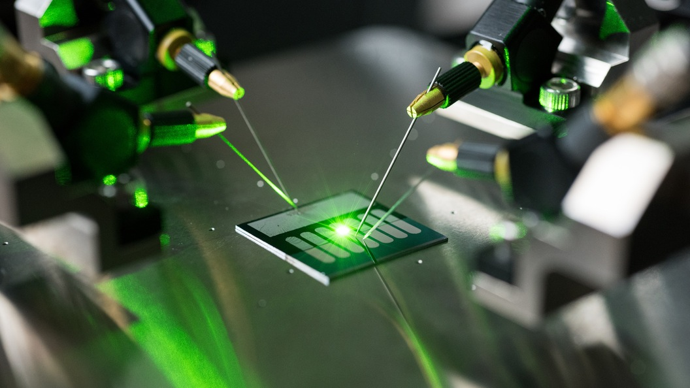

Нано
— греческое слово, означающее одну миллиардную часть чего-нибудь, например, метра. Размер одного атома немного меньше нанометра. А нанометр настолько меньше метра, насколько обыкновенная горошина меньше земного шара. Если бы рост человека был один нанометр, то толщина листа бумаги показалась бы человеку равной расстоянию от Москвы до города Тулы, а это целых 170 километров!
Слово «технологии» означает создание из доступных материалов того, что необходимо человеку.А нанотехнологии — это создание того, что нужно человеку, из атомов и групп атомов (они называются наночастицами) при помощи специальных приборов.
Учёные договорились считать наночастицами все, что имеет размер от одного до ста нанометров.
Существует два способа получения наночастиц:
сверху вниз. Исходный материал измельчают разнообразными способами до тех пор, пока частица не станет наноразмерной.
снизу вверх. Это более сложный способ, но именно за ним учёные видят будущее нанотехнодогий. Получение наночастиц этим способом напоминает работу с конструктором. Только в качестве деталей используются атомы и молекулы, из которых учёные создают новые наноматериалы и наноустройства.
Отцом нанотехнологии можно считать греческого философа Демокрита. Примерно в 400 г. до н.э. он впервые использовал слово «атом», что в переводе с греческого означает «нераскалываемый», для описания самой малой частицы вещества.
Примером первого использования нанотехнологий можно назвать – изобретение в 1883 году фотопленки Джорджем Истмэном, который впоследствии основал известную компанию Kodak.
В настоящее время нанотехнология является одним из приоритетных направлений развития Российской науки.
Нанотехнологии в быту
В настоящее время нанотехнологии находят применение в разных сферах жизнедеятельности человека. Перечислить все области, в которых эта глобальная технология применяется, практически невозможно. Можно назвать только некоторые из них.
Как оказалось, нанотехнологии часто встречаются в быту, они повсюду, просто мы об этом не знаем.
Все мы используем мыло, без которого уже не представляем личную гигиену. Никто даже не догадывается, что мыло – продукт нанотехнологии, но один из самых простых. Мыло содержит мицеллы, небольшие наночастицы, которые используются и для производства других популярных косметологических средств. Любителям солнца и шоколадного загара также помогают нанотехнологии. Солнцезащитные крема и лосьоны создаются с добавлением частиц, которые насыщают кожу витаминами и защищают ее от вредного воздействия.
Нанотехнологии немаловажную роль сыграли и в развитии моды. С применением новейших технологий производятся лыжные куртки. Они очень хорошо сохраняют тепло, не пропускают ветра и не мокнут. Также наночастицы используют при создании иной спортивной одежды, которая не мнется, устойчива к загрязнениям и ненастьям.
В теннисе нанотехнологии сыграли важную и одну из главных ролей. Наночастицы содержаться в теннисных ракетках и мячиках. Благодаря им, они стали гораздо легче, мячи более прыгучими и быстрыми. Нанотехнологии стали популярными при разработке и выпуске сантехники. Наночастицы позволяют создавать особое покрытие, которое долго сохраняет свой товарный блестящий вид и очень легко чистится.
Мы даже не подозреваем, что нанотехнологии помогают нам в повседневной жизни при работе с компьютерами и интернетом. Наночастицы используются для увеличения параметров памяти жестких дисков. Благодаря разработкам, появились ноутбуки, нетбуки, айфоны, смартфоны и многие другие современные гаджеты. Нашим автомобилям также значительно помогло развитие наночастиц. Ими производители покрывают поверхности детали и они служат гораздо дольше. Важную значимость нанотехнологии нашли в медицине
Также в некоторых автомобилях устанавливаются
Кусочек лейкопластыря, которым мы заклеиваем порез на ручке , имеет нанослой серебра, помогающий быстрее залечивать рану. Это потому, что серебро имеет антибактериальные свойства, которые действуют лучше с повышением площади поверхности, что обеспечивается наночастицами.
Значение нанотехнологий в жизни каждого человека огромно. Чем комфортнее становится жизнь, тем больше ученые смогли узнать об этих очень малых частицах.